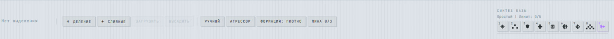

About & Gameplay
A calculator grid becomes a tactical battlefield.
Axiom War transforms pure mathematical logic into real-time strategy. The battlefield is a coordinate grid where every compiled equation instantly translates into unit vectors, state shifts, and territory capture. Victory doesn't depend on raw APM, but on the speed and precision of your calculations.
